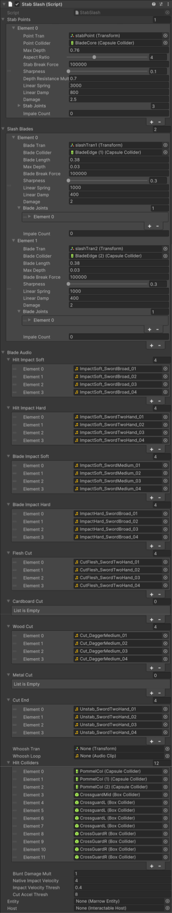

Stab Slash
Gives a Marrow Entity (a spawnable) the ability to stab and damage enemies and certain spawnables. Can also be used to inflict blunt damage.
Requirements
A Stab Slash must be on the same GameObject as a Marrow Entity.
All Blade Audio fields that require an AudioClip must be filled out with at least one valid sound, otherwise the blade will not work properly.
For every Stab Point and Slash Blade, there must be at least one StabJoint/BladeJoint (does not need to be filled out and can be completely empty), otherwise the blade will not work properly likely because of the blade script always expecting there to be a first element.
Properties
| Property Name ______________________ |
Property Type ______________________ |
Property Description |
| Stab Points | StabPoint[] |
Points on the blade where objects and enemies can be impaled in a straight line. |
StabPointPoint Tran |
Transform |
The Transform at which the stabbing begins; the 'tip' of the blade. NOTE: Make sure the Z axis of this Transform points outward in the direction of the stab, and that the Transform sits near the surface of the Point Collider, but not within the Point Collider. Position this Transform where you want the stab to start. |
StabPointPoint Collider |
Collider |
The Collider on which this point should detect collisions with. Normally should have Is Trigger set to false. |
StabPointMax Depth |
float |
How far this stab point can impale an object in meters. |
StabPointAspect Ratio |
float |
The shape of the tip of the blade. NEEDS CONFIRMATION |
StabPointStab Break Force |
float |
The amount of force required to snap off the current stab connection. |
StabPointSharpness |
float |
UNKNOWN |
StabPointDepth Resistance Multiplier |
float |
Determines how hard it is to push an object along the blade while stabbing it. |
StabPointLinear Spring |
float |
The strength of the spring on this stab. UNCLEAR |
StabPointLinear Damp |
float |
The damping of the spring joint on this stab. UNCLEAR |
StabPointDamage |
float |
The amount of damage this stab causes when an object is impaled on it. |
StabPointStab Joints |
StabJoint[] |
UNKNOWN |
StabPointImpale Count |
int |
UNKNOWN |
| Slash Blades | SlashBlade[] |
Points on the blade where objects and enemies can be slashed along a line. |
SlashBladeBlade Tran |
Transform |
The center point of the slash; the 'edge' of the blade. NOTE: Make sure the Z axis of this Transform points outward in the direction of the slash, and the Y axis of this Transform faces in the direction the edge of the blade goes in. Also, position this Transform right above the surface of the associated collider where you want the slash to be and not within it. |
SlashBladeBlade Collider |
Collider |
The Collider on which this point should detect collisions with. Normally should have Is Trigger set to false. |
SlashBladeBlade Length |
float |
The length of the blade in meters centered around the Blade Tran. |
Example
